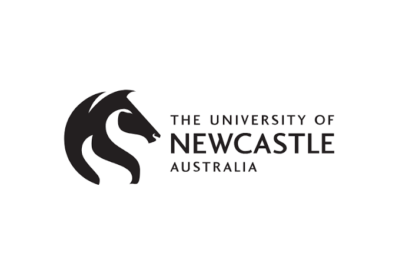
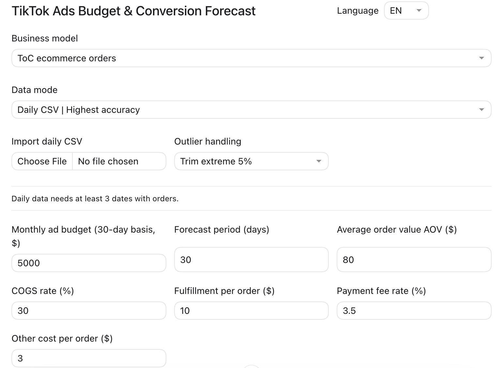

ARTIFICIAL INTELLIGENCE × FUTURE DEVELOPMENT
Le Quanwei（Jerry Lok）
Exploring intelligence.
Imagining what comes next.
FOLLOW YOUR CURIOSITY
01 / ABOUT
Technology begins
with a question.
I am Jerry.

The University of Newcastle, Australia
Bachelor of Communication with Distinction
Majors in News Media and Public Relations
Awarded and conferred: 05 September 2024
College Commendation List
College of Human and Social Futures02 / SELECTED MEDIA WORKS
Stories, in focus.
Selected news and podcast work from my media studies.
MANDARIN / PODCAST
Jerry Talks Health
Confronting Diabetes in Singapore
03 / INTERACTIVE STUDY
A field of possibilities.
Move your pointer or touch the field to influence its motion. A small experiment in interaction and generative visuals.
An artistic particle visualization, inspired by quantum imagery. It does not simulate a physical quantum system.
“The best way to predict the future is to invent it.”
— Alan Kay
04 / AI CREATIVE PRACTICE
From characters to scenes.
A behind-the-scenes look at my AI short-drama creative process.
01 / CHARACTERS
Building a consistent cast.
Character sheets bring portraits, full-body views, clothing and written profiles into one workspace.
An independent AI short-drama project. All creative work is my own.
AI PRACTICE / A TOOL I BUILT
Turning budgets into scenarios.
An independently built tool for forecasting social-commerce advertising budgets and conversions.

TIKTOK ADS BUDGET & CONVERSION FORECAST
Built around a real planning question.
I built this tool to explore advertising budgets and conversion forecasts for social-commerce planning.
01 / Inputs
Budget, forecast period, average order value and per-order costs are brought into one interface.
02 / Data
The tool provides daily CSV import and an option for handling outliers.
03 / Planning
Adjustable assumptions provide a structured way to explore different planning scenarios.
04 / AI collaboration
I used AI to organise requirements, design the calculation logic, write code and debug the tool.
05 / AI & THE FUTURE
What remains distinctly human?
As AI becomes part of every field, how might it reshape what we consider distinctly human?
Shared activities. New questions.
MEDIA & STORYTELLING
If creation is shared, where does authorship begin?
I want to explore how intention, interpretation and creative ownership change when people create with AI.
Human agency & responsibility
How do we remain authors of our choices?
A direction I hope to explore through further study, grounded in my media work, storytelling and practical tools.
06 / CONTACT